- 立川の歯医者「たけだなおや歯科クリニック」TOP
- 医院案内・アクセス
患者さんの目線を大切に、予防中心・保険診療中心の歯科医療をご提案する「たけだなおや歯科クリニック」。こちらでは当院の医院概要・アクセス情報・設備案内をご覧いただけます。
たけだなおや歯科クリニックについて
医院情報
| 住所 | 〒190-0023 東京都立川市柴崎町3-11-4 千代田生命立川ビル1F |
|---|---|
| TEL | 042-522-1770 |
| 診療時間 | 月・水・金……10：00～21：00 火・木……10：00～19：30 土……10：00～18：00 ※昼休み……13：00～14：30 |
| 休診日 | 日曜日・祝祭日（初診・急患随時受付） |
| 最寄り駅 | JR中央線「立川駅」より徒歩5分 |
アクセス
駐車場のご案内
当院には専用駐車場はございません。お車でお越しの際は、お近くのコインパーキングをご利用ください。コインパーキングの際は、受付にてその旨ご申告いただけましたら、診療時間中の駐車場利用料金を当院が負担いたします（待ち時間の利用料金を除く）。
院内をご案内します
-
医院外観
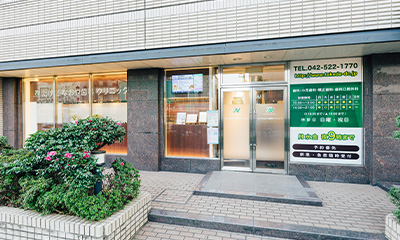
まずは、こちらが当院の外観です。立川市柴崎町にある千代田生命立川ビルの1階にあります。
-
受付・待合室
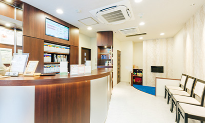
ご来院の際は、こちらで受付をお済ませください。スタッフが笑顔でお出迎えいたします。治療の不安や我慢できそうにない痛みなど、何かあればご遠慮なくおっしゃってください。
お名前をお呼びするまで、椅子に座りリラックスしてお待ちください。 -
診療室
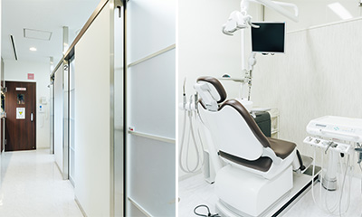
プライバシーに配慮し、ユニットごとに仕切りを配置。さらに患者さんとスタッフがすれ違うことがないように、動線も工夫しています。スタッフや他の患者さんの目を気にせず、安心して治療を受けられる環境です。
-
キッズコーナー
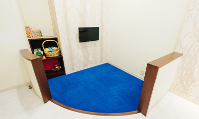
お子さんが退屈せずに済むように、キッズコーナーを設置しています。小さなお子さんが一緒のときも、安心して治療を受けていただけます。パパ・ママの診療中は、当院のスタッフがお子さんを見守ります。
-
モニター
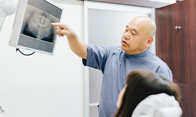
各ユニットにはモニターを設置して、レントゲン写真や資料を見ながら説明を受けていただけるようにしています。わかりやすく丁寧なご説明を心がけておりますが、もし不明点などございましたら遠慮なくおたずねください。
充実設備で、精度の高い
治療を実現
-
歯科用CT
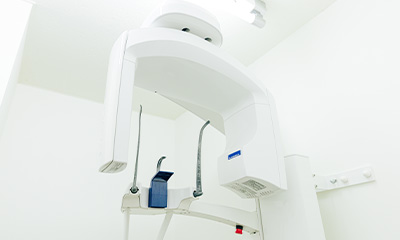
精度の高い歯科治療には、口腔内の状態を正確に把握する検査が必要不可欠です。当院では従来のレントゲンでは撮影できなかった詳細な口腔内のデータを取ることができる歯科用CTを導入。高い精度が求められる治療に活かしています。
-
デジタルレントゲン
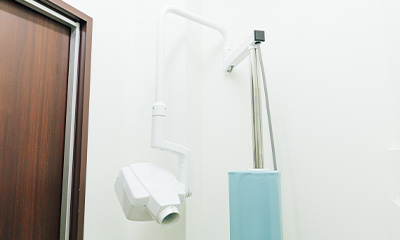
お口の状態を撮影し、そのデータをリアルタイムでモニターに映すことができます。正確かつスピーディーな診断が可能になり、被ばく量を抑えられるというメリットもあります。
-
心電図モニター
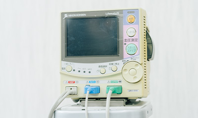
当院では必要に応じて心電図や血圧計での全身管理を行いながら、治療を進めています。高血圧や糖尿病などの全身疾患をお持ちの方にも、安心してご来院いただける環境です。
-
口腔内カメラ
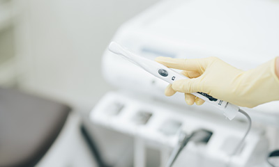
各診療ユニットには口腔内カメラが設置されており、患者さんのお口の中を、患者さんご自身に確認していただけるようになっています。現状を把握することは、歯を守るための第一歩。予防意識を高めることにもつながります。
-
APミキサー（印象採取）
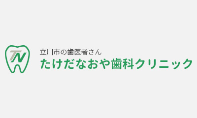
こちらの器具を使用すると、より短時間で、より正確な印象材（歯の型取りに使用するもの）を製作できます。
患者さんの安心・安全のために、衛生管理を徹底
-
クラスB滅菌器
「バキュクレーブ31ｂ＋」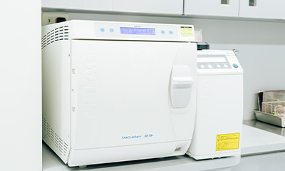
歯科先進国・ヨーロッパの基格において最も厳しい基準をクリアしたクラスB滅菌器を導入。真空蒸気滅菌で細菌・ウィルスを完全に死滅させることが可能です。歯を削る器具は使用の都度交換し、こちらの滅菌器で滅菌し、安心・安全な治療に努めています。
-
口腔外バキューム
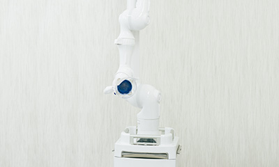
衛生環境を保つため、治療中に飛散する歯・補綴物の削りカス、唾液、血液などは口腔内バキュームで吸い取り、室内に飛び散ることがないようにしています。